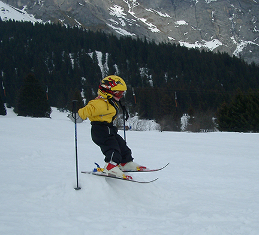
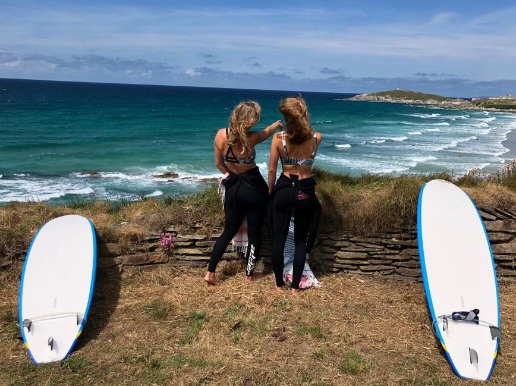

Bianca Flütsch

Nitt z'viel denka -aifach gas geh- denn kunnt's guat
Portrait
- Name:
- Nachname:
- Geburtstag:
- Geschwister:
- Eltern:
- Ausbildung:
- Hobbies:
- Wohnort:
- Bianca
- Flütsch
- 21. Mai 2001
- Nina (16), Gian (21)
- Peter und Gabriela Flütsch
- Kauffrau, Weisse Arena Gruppe
- Surfen, Lesen, Skaten
- Flims, Graubünden CH
Mit sieben Jahren trat ich der Renngemeinschaft Alpanarena bei. Hoch motiviert standen mein Bruder und ich jeden Samstag auf, um unserer Leidenschaft nachzugehen. Bereits mit sieben Jahren fuhr ich mein erstes Rennen für die Renngruppe Laax. Durch meinen Willen fuhr ich schon früh vorne mit und erzielte Erfolge. Mit viel Freude am Sport, stieg ich Kader um Kader auf bis zum Nationalen Leistungszentrum.
Alle wollen zuoberst auf dem Podest stehen, jedoch ist für mich der Weg zum Ziel ebenso wichtig. Mit meinem motivierendem Team macht beinahe jedes Training Spass. So manche Krisen überwinden wir gemeinsam, denn Zusammenhalt wird grossgeschrieben. Trotz allem ist Ski-Alpin ein Einzelsport und ohne Einsatz kommt niemand weit.
Natürlich habe ich auch ein Leben neben dem Skifahren. Ich reise sehr gerne und liebe es neue Menschen und Orte zu entdecken. Am Strand in der Sonne, in ein spannendes Buch abtauchen ist für mich der perfekte Ausgleich zum kalten Skitraining. In Bali habe ich das Surfen für mich entdeckt und so habe ich meinen Adrenalinschub auch in den Ferien.
